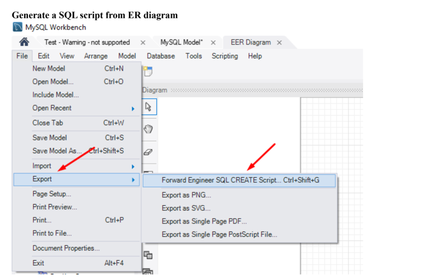

V mysql jsou uloženy tabulky uživatelských účtů. Chová se jako jakákoliv DB. V tabulkách jsou uloženy veškerá oprávnění přidělená jednotlivým uživatelům.
Většina sloupců obsahuje hodnoty YES or NO.
DB obsahuje tabulky jako jsou: User, Db, Host, Func, Colums_priv, Tables_priv
Import
Import dat do DB se provádí skrz mysqlimport (mysqlimport Nejakadatabaze Tabulka_Do_Ktere_Chci_Nacist_Data.txt). Nebo příkaz LOAD DATA INFILE
Export
Pro export se používá mysqldump. Obdoba programu mysqlimport. Lze exportovat celou DB nebo jen jednu tabulku. Příkaz SELECT INTO OUTFILE

Typy tabulek
Netransakční
MyISAM --> Defaultní
ISAM
MERGE
HEAP
Transakční
BDB
InnoDB
myisamcheck
Program myisamchk slouží k údržbě (tedy k získávání informací, kontrole, opravám a optimalizaci) tabulek typu MyISAM
myisamchk [přepínače] Název_Tabulky
mysqladmin
např. změna hesla, vytvoření či odstranění DB, zjištění informací o stavu a verze DB